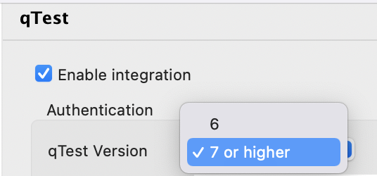
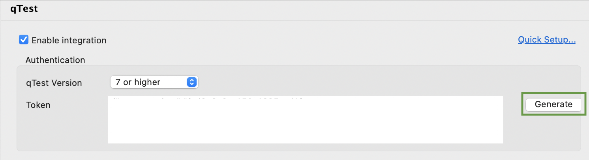
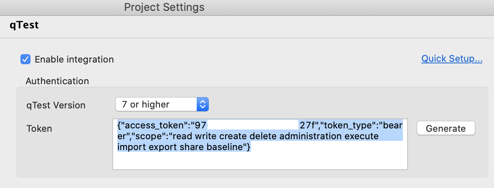
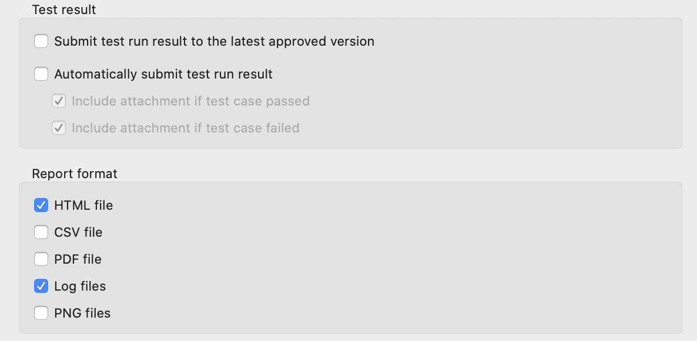

Set up qTest integration manually
- In the Authentication section, select your qTest version.We recommend selecting 7 or higher. This is because earlier versions might be deprecated soon.
- To generate a token for authentication, you can choose either log in with username and password or with an SSO token.
- Log in with username and password
Click Generate. The Generate new token dialog opens.

Fill in your qTest account information. Then click Generate.
Katalon Studio connects to qTest using the provided information. The token is generated.
Log in with SSO token
If you are using Single Sign-On (SSO) to log in to qTest, ignore the Generate button, copy and paste the following token format in the Token text field:
{"access_token":"<bearer_token_value>","token_type":"bearer","scope":"read write create delete administration execute import export share baseline"}To find the
<bearer_token_value>, access qTest Manager. Sign in with your SSO account. Navigate to the Download qTest Resources page. In the API & SDK section, you can see the Bearer Token value.
- Select your preferred test submission method from the following options:
Field Description Automatically submit test run result Results of executed test cases are uploaded automatically to qTest. Submit test run result to the latest approved version Test run results are submitted to the latest approved version of the mapped qTest test case. Report format Additional attachments for reports to be upload to qTest. These report formats only apply to test suites. To learn more about test suite and test suite collection reports, see View test suite and test suite collection reports in Katalon Studio. - To conduct test case mapping, follow these steps:
- To conduct test suites mapping, follow these steps: